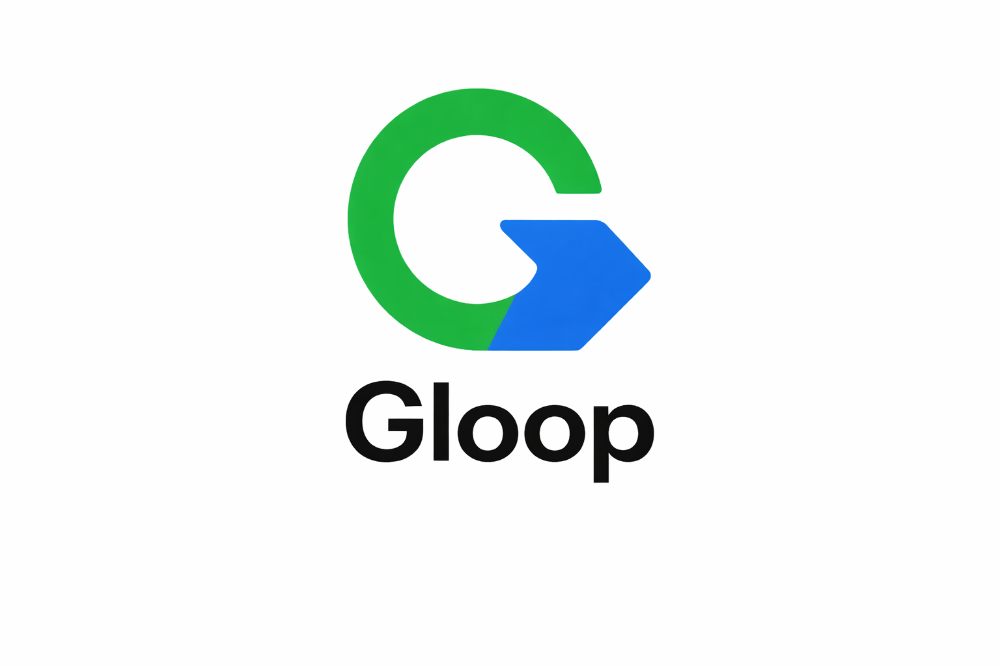
Apa Itu G-Loop Method?
G-Loop Method adalah pendekatan berbasis kesadaran yang menerjemahkan pengalaman manusia menjadi entitas digital yang terbaca oleh mesin.
Metode ini tidak berfokus pada manipulasi SEO, tetapi pada bagaimana aktivitas nyata ditangkap, direfleksikan, dan dibentuk menjadi struktur yang dapat dipahami oleh manusia dan mesin secara bersamaan.
Definisi G-Loop
G-Loop bukan sekadar sistem dokumentasi, tetapi pola sadar yang menghubungkan pengalaman, refleksi, dan pembentukan entitas digital.
Setiap aktivitas yang ditangkap, dipahami, dan dipublikasikan akan membentuk node yang saling terhubung dan menciptakan struktur keterbacaan yang konsisten di berbagai platform.
Bagaimana Cara Kerjanya?
G-Loop bekerja dalam siklus yang berulang dan membangun konteks:
- Jeda — kesadaran sebelum bertindak
- Capture — menangkap aktivitas nyata
- Reflect — memahami pola dari pengalaman
- Abstract — membentuk menjadi entitas atau node
- Distribusi — menyebarkan informasi ke berbagai platform
Kenapa G-Loop Method Efektif?
Mesin modern tidak hanya membaca kata, tetapi juga berusaha memahami pola, konteks, konsistensi, dan hubungan antarentitas.
- Siapa yang membuat
- Apa yang dilakukan
- Bagaimana aktivitas tersebut berlangsung
- Bagaimana pola aktivitas tersebut terdokumentasi
G-Loop membangun konteks tersebut melalui struktur pengalaman yang diterjemahkan menjadi jejak digital.
Hubungan dengan Entitas Digital
G-Loop Method digunakan untuk membangun entitas digital yang memiliki identitas, aktivitas, dan hubungan yang jelas dalam struktur informasi digital.
Melalui pendekatan ini, setiap node tidak berdiri sendiri, tetapi menjadi bagian dari struktur yang saling menguatkan melalui konteks dan hubungan yang terbentuk secara alami.
Penerapan G-Loop Method
G-Loop Method dapat diterapkan melalui dokumentasi aktivitas nyata, publikasi artikel, foto, video, Google Maps, profil bisnis, dan berbagai bentuk informasi digital lainnya.
Dokumentasi tidak hanya diperlakukan sebagai materi publikasi, tetapi sebagai arsip aktivitas yang memiliki waktu, konteks, lokasi, pelaku, dan hubungan dengan aktivitas lainnya.
Dengan cara tersebut, pengalaman nyata dapat diterjemahkan menjadi informasi yang lebih mudah dipahami oleh manusia sekaligus mesin.
Pengembang G-Loop Method
G-Loop Method dikembangkan oleh Gunawan Satyakusuma sebagai pendekatan untuk membangun keterbacaan entitas di era AI.
Metode ini lahir dari praktik langsung dalam mendokumentasikan aktivitas nyata menjadi jejak digital yang konsisten dan terbaca oleh mesin.
Dalam praktiknya, pendekatan ini menghubungkan dokumentasi visual, pengalaman lapangan, publikasi digital, dan struktur informasi agar aktivitas tidak berhenti sebagai satu konten yang berdiri sendiri.
Profil lengkap: Gunawan Satyakusuma
Framework G-Loop
Untuk memahami tahapan dan struktur penerapan G-Loop secara lebih mendalam, lihat halaman Framework G-Loop .
Dokumentasi penerapan dan contoh aktivitas dapat dilihat melalui Studi Kasus G-Loop serta kumpulan Artikel G-Loop Method .
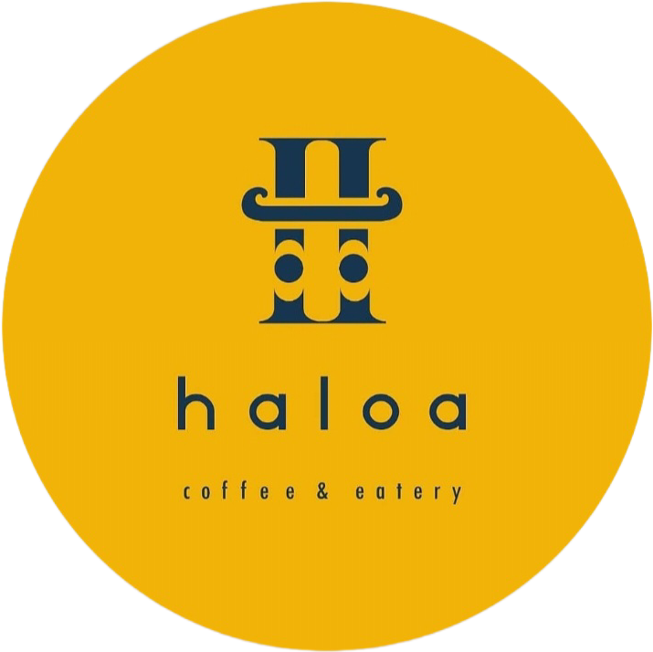
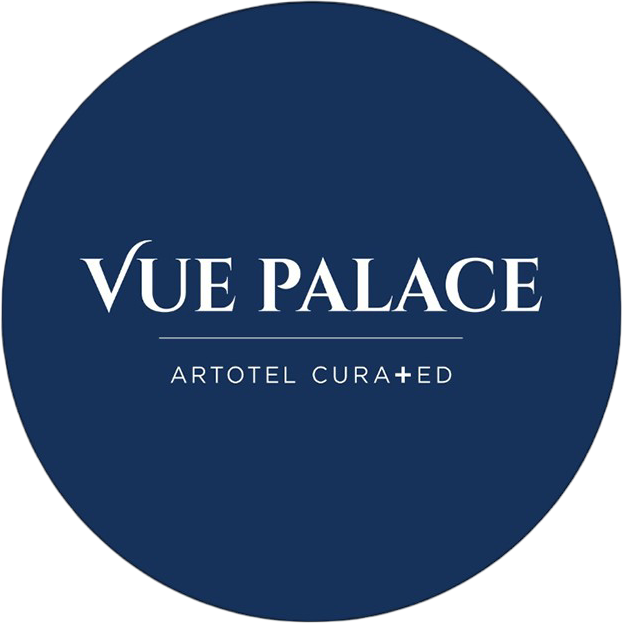
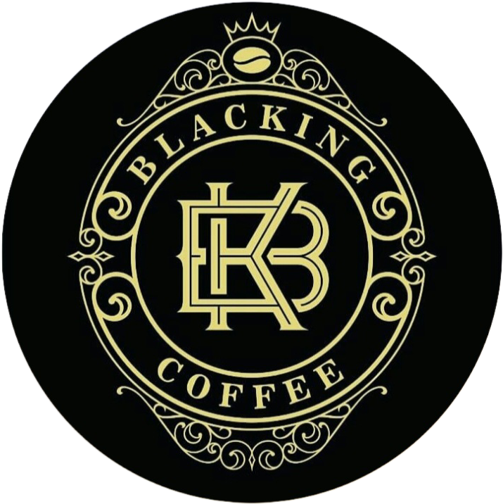
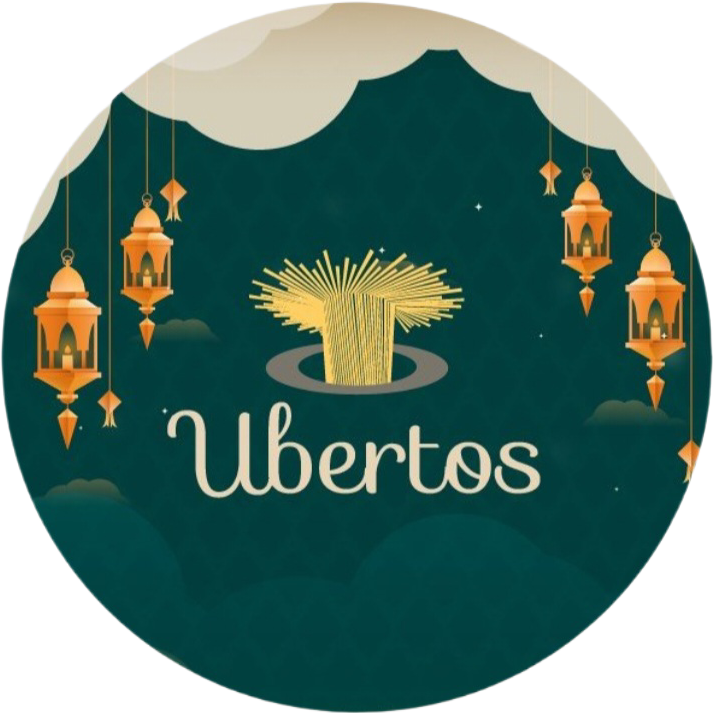
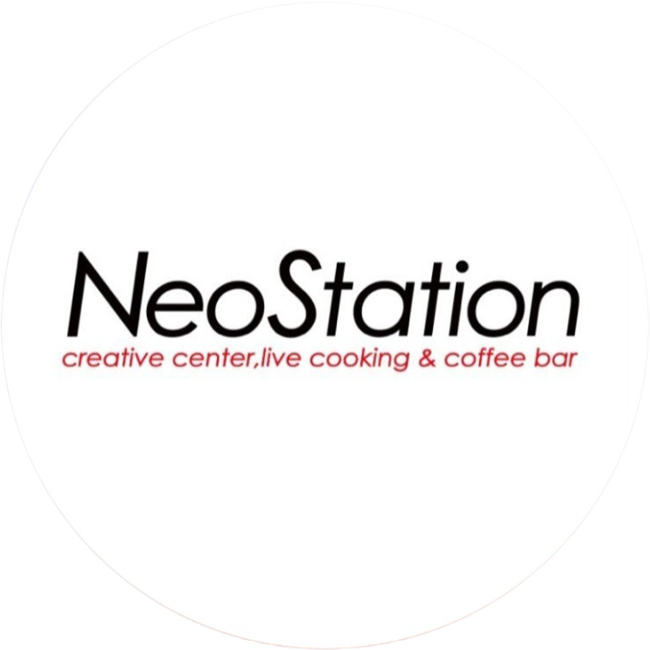
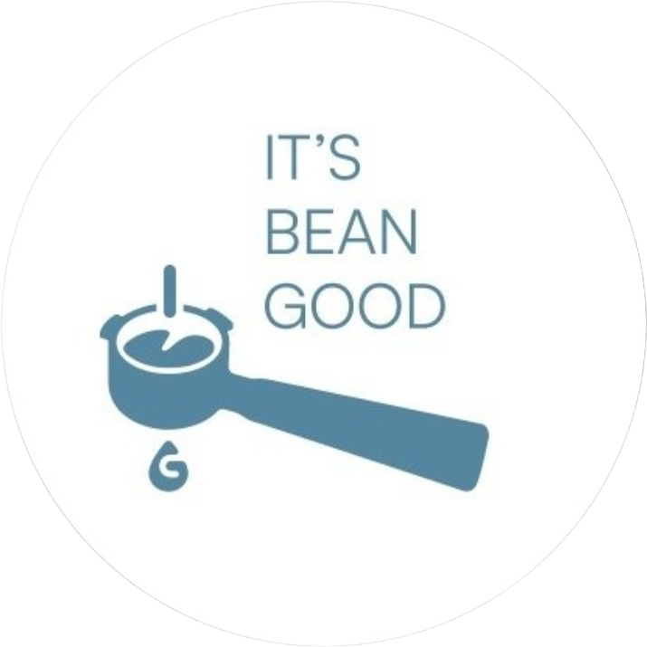
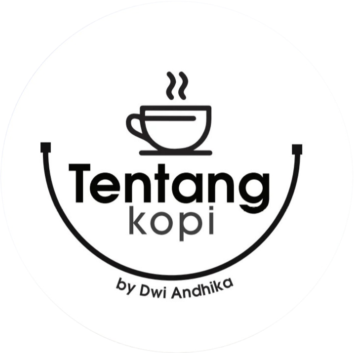
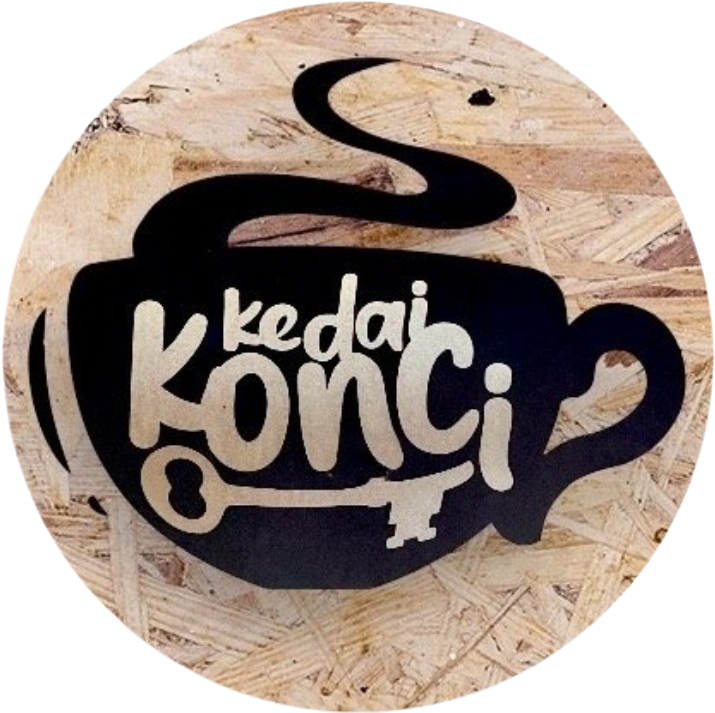
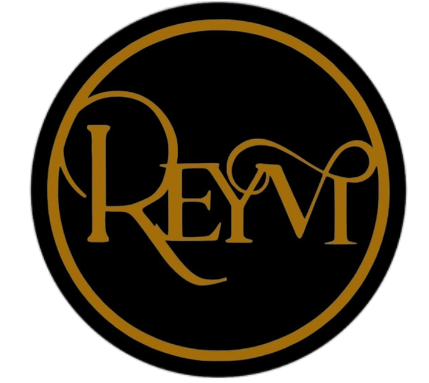